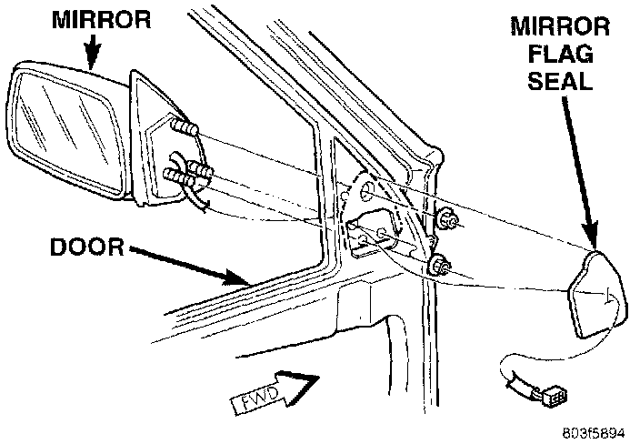

Power Mirror
REMOVAL1. Disconnect and isolate the battery negative cable.
2. Remove the front door trim panel as described under Door Module.
3. Unplug the electrochromic mirror wire harness connector, if equipped.
4. Unclip the mirror wire harness(es) from the inner door panel.
Power Mirror Remove/Install:

5. Remove the mirror flag seal.
6. Remove the three nuts that secure the mirror to the door.
7. Remove the mirror from the door.
8. Reverse the removal procedures to install. Tighten the mirror mounting nuts to 7.4 N.m (65 in. lbs.).